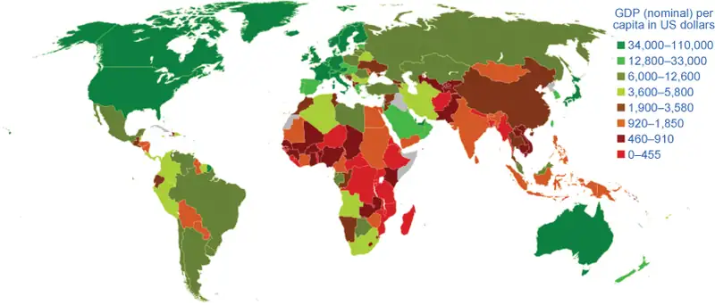
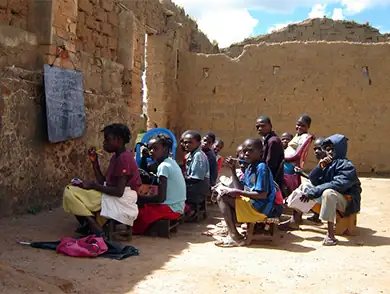

Chapter 32: Macroeconomic Policy Around the World¶
Introduction¶
Bring It Home: Youth Unemployment
Chad Harding, a young man from Cape Town, South Africa, completed school having done well on his exams. He had high hopes for the future. Like many young South Africans, however, he had difficulty finding a job. “I was just stuck at home waiting, waiting for something to come up,” he said in a BBC interview. In South Africa over 60% of young adults are unemployed. In fact, the problem is not limited to South Africa. Seventy-three million of the world’s youth aged 15 to 24 are currently unemployed, according to the International Labour Organization.
This chapter will look at macroeconomic policies around the world, specifically those related to reducing unemployment, promoting economic growth, and stable inflation and exchange rates.
Chapter Outline: Introduction to Macroeconomic Policy around the World
In this chapter, you will learn about:
- The Diversity of Countries and Economies across the World
- Improving Countries’ Standards of Living
- Causes of Unemployment around the World
- Causes of Inflation in Various Countries and Regions
- Balance of Trade Concerns
There are extraordinary differences in the composition and performance of economies across the world. What explains these differences? Are countries motivated by similar goals when it comes to macroeconomic policy? Can we apply the same macroeconomic framework that we developed in this text to understand the performance of these countries? Let’s take each of these questions in turn.
Explaining differences: Recall from Unemployment that we explained the difference in composition and performance of economies by appealing to an aggregate production function. We argued that differences in productivity explain the diversity of average incomes across the world, which in turn were affected by inputs such as capital deepening, human capital, and “technology.” Every economy has its own distinctive economic characteristics, institutions, history, and political realities, which imply that access to these “ingredients” will vary by country and so will economic performance.
For example, South Korea invested heavily in education and technology to increase agricultural productivity in the early 1950s. Some of this investment came from its historical relationship with the United States. As a result of these and many other institutions, its economy has managed to converge to the levels of income in leading economies like Japan and the United States.
Similar goals and frameworks: Many economies that have performed well in terms of per capita income have—for better or worse—been motivated by a similar goal: to maintain the quality of life of their citizens. Quality of life is a broad term, but as you can imagine it includes but is not limited to such things as low level of unemployment, price stability (low levels of inflation), and the ability to trade. These seem to be universal macroeconomic goals as we discussed in The Macroeconomic Perspective. No country would argue against them. To study macroeconomic policy around the world, we begin by comparing standards of living. In keeping with these goals, we also look at indicators such as unemployment, inflation, and the balance of trade policies across countries. Remember that every country has had a diverse set of experiences; therefore although our goals may be similar, each country may well require macroeconomic policies tailored to its circumstances.
Link It Up
For more reading on the topic of youth unemployment, visit this website to read “Generation Jobless” in the Economist.
32.1 The Diversity of Countries and Economies across the World¶
Learning Objectives
By the end of this section, you will be able to:
- Analyze GDP and GNI per capita as a measure of the diversity of international standards of living
- Identify what classifies a country as low income, lower-middle income, upper-middle income, or high income
- Explain how geography, demographics, industry structure, and economic institutions influence standards of living
The national economies that comprise the global economy are remarkably diverse. Let us use one key indicator of the standard of living, GDP per capita, to quantify this diversity. You will quickly see that quantifying this diversity is fraught with challenges and limitations. As we explained in The Macroeconomic Perspective, we must consider using purchasing power parity or “international dollars” to convert average incomes into comparable units. Purchasing power parity, as we formally defined in Exchange Rates and International Capital Flows, takes into account that prices of the same good are different across countries.
The Macroeconomic Perspective explained how to measure GDP, the challenges of using GDP to compare standards of living, and the difficulty of confusing economic size with distribution. In China’s case, for example, China ranks as the second largest global economy, second to only the United States, with Japan ranking third. However, when we take China’s GDP of $9.2 trillion and divide it by its population of 1.4 billion, then the per capita GDP is only $6,900, which is significantly lower than that of Japan, at $38,500, and that of the United States, at $52,800. Measurement issues aside, it’s worth repeating that the goal, then, is to not only increase GDP, but to strive toward increased GDP per capita to increase overall living standards for individuals. As we have learned from Economic Growth, countries can achieve this at the national level by designing policies that increase worker productivity, deepen capital, and advance technology.
The related measure gross national income (GNI) per capita also allows us to rank countries into high-, upper-middle-, lower-middle-, or low-income groups. The World Bank updates the classifications each year. Low-income countries are those with $1,085 per capita GNI per year; lower-middle-income countries have a per capita GNI between $1,086 and $4,255; upper-middle-income countries have a per capita GDP between $4,265 and $13,205; while high-income countries have over $13,206 per year per capita income. According to the 2022 classifications, there are 27 low-income nations and 80 high-income nations. The other 110 measured nations occupy the two tiers of middle-income nations, and are comprised of the vast majority—75%, of the world’s population. Despite the population and quantitative majority, these nations only produce one third of global GNI and have nearly two-thirds of the world’s people living in poverty.
Table 32.1 World Income versus Global Population Note that while the income categories are determined by GNI, many other economic measures use GDP. (Source: World Bank, https://data.worldbank.org/indicator/NY.GDP.PCAP.CD)
| Income Group | GDP (in billions) | % of Global GDP | Population (millions) | % of Global Population |
|---|---|---|---|---|
| Low income ($1,085 or less) | $457.6 | 0.5% | 665.1 | 8.6% |
| Lower- and upper-middle income ($1,086–$13,205) | $30,535 | 36.5% | 5,853 | 75.7% |
| High income (more than $13,205) | $53,396 | 63% | 1,215 | 15.7% |
| World Total income | $84,388 | 7,773.1 |
![This graph illustrates two pie charts. The chart on the left is the percent of global GDP by country income. The biggest slice of global GDP, 63 percent, is from high-income countries. The next biggest slice is middle-income countries at 36.5 percent, and the smallest slice is low-income countries at 0.5 percent. The chart on the right is percentage of population by country income. The largest slice is the population of middle-income countries, 75.7 percent. Next is high-income countries, at 15.7 percent. The smallest slice is low-income countries, at 8.6 percent.](img/cnx-econ3ev1-2-c32-02.webp)
An overview of the regional averages of GDP per person for developing countries, measured in comparable international dollars as well as population in 2018 (Figure 32.3), shows that the differences across these regions are stark. As Table 32.2 shows, nominal GDP per capita in 2020 for the 652 million people living in Latin America and the Caribbean region (excluding high income countries in that region) was $6,799, which far exceeds that of South Asia and sub-Saharan Africa. In turn, people in the world’s high-income nations, such as those who live in the European Union nations or North America, have a per capita GDP three to four times that of the people of Latin America. To put things in perspective, North America and the European Union (plus the United Kingdom) have slightly more than 10% of the world’s population, but they produce and consume about 44% of the world’s GDP.

Table 32.2 Regional Comparisons of Nominal GDP per Capita and Population in 2020 GDP per capita excludes high income countries in each region. (Source: https://data.worldbank.org/indicator/NY.GDP.PCAP.CD)
| Population (in millions) | GDP Per Capita | |
|---|---|---|
| East Asia and Pacific | 2,361 | $8,254 |
| South Asia | 1,857 | $1,823.7 |
| Sub-Saharan Africa | 1,136.7 | $1,499.4 |
| Latin America and Caribbean | 652 | $6,799.2 |
| Middle East and North Africa | 465 | $3,018.4 |
| Europe and Central Asia | 923 | $7,688.5 |
Such comparisons between regions are admittedly rough. After all, per capita GDP cannot fully capture the quality of life. Many other factors have a large impact on the standard of living, like health, education, human rights, crime and personal safety, and environmental quality. These measures also reveal very wide differences in the standard of living across the regions of the world. Much of this is correlated with per capita income, but there are exceptions. For example, life expectancy at birth in many low-income regions approximates those who are more affluent. The data also illustrate that nobody can claim to have perfect standards of living. For instance, despite very high income levels, there is still undernourishment in Europe and North America.
Link It Up
Economists know that there are many factors that contribute to your standard of living. People in high-income countries may have very little time due to heavy workloads and may feel disconnected from their community. Lower-income countries may be more community centered, but have little in the way of material wealth. It is hard to measure these characteristics of standard of living. The Organization for Economic Co-Operation and Development has developed the “OECD Better Life Index.” Visit this website to see how countries measure up to your expected standard of living.
The differences in economic statistics and other measures of well-being, substantial though they are, do not fully capture the reasons for the enormous differences between countries. Aside from the neoclassical determinants of growth, four additional determinants are significant in a wide range of statistical studies and are worth mentioning: geography, demography, industrial structure, and institutions.
Geographic and Demographic Differences
Countries have geographic differences: some have extensive coastlines, some are landlocked. Some have large rivers that have been a path of commerce for centuries, or mountains that have been a barrier to trade. Some have deserts, some have rain forests. These differences create different positive and negative opportunities for commerce, health, and the environment.
Countries also have considerable differences in the age distribution of the population. Many high-income nations are approaching a situation by 2020 or so in which the elderly will form a much larger share of the population. Most low-income countries still have a higher proportion of youth and young adults, but by about 2050, the elderly populations in these low-income countries are expected to boom as well. These demographic changes will have considerable impact on the standard of living of the young and the old.
Differences in Industry Structure and Economic Institutions
Countries have differences in industry structure. In the world’s high-income economies, only about 2% of GDP comes from agriculture; the average for the rest of the world is 12%. Countries have strong differences in degree of urbanization.
Countries also have strong differences in economic institutions: some nations have economies that are extremely market-oriented, while other nations have command economies. Some nations are open to international trade, while others use tariffs and import quotas to limit the impact of trade. Some nations are torn by long-standing armed conflicts; other nations are largely at peace. There are also differences in political, religious, and social institutions.
No nation intentionally aims for a low standard of living, high rates of unemployment and inflation, or an unsustainable trade imbalance. However, nations will differ in their priorities and in the situations in which they find themselves, and so their policy choices can reasonably vary, too. The next modules will discuss how nations around the world, from high income to low income, approach the four macroeconomic goals of economic growth, low unemployment, low inflation, and a sustainable balance of trade.
32.2 Improving Countries’ Standards of Living¶
Learning Objectives
By the end of this section, you will be able to:
- Analyze the growth policies of low-income countries seeking to improve standards of living
- Analyze the growth policies of middle-income countries, particularly the East Asian Tigers with their focus on technology and market-oriented incentives
- Analyze the struggles facing economically-challenged countries wishing to enact growth policies
- Evaluate the success of sending aid to low-income countries
Jobs are created in economies that grow. What is the origin of economic growth? According to most economists who believe in the growth consensus, economic growth (as we discussed in Economic Growth) is built on a foundation of productivity improvements. In turn, productivity increases are the result of greater human and physical capital and technology, all interacting in a market-driven economy. In the pursuit of economic growth, however, some countries and regions start from different levels, as the differences in per capita GDP presented earlier in Table 32.2 illustrate.
Growth Policies for the High-Income Countries¶
For the high-income countries, the challenge of economic growth is to push continually for a more educated workforce that can create, invest in, and apply new technologies. In effect, the goal of their growth-oriented public policy is to shift their aggregate supply curves to the right (refer to The Aggregate Demand/Aggregate Supply Model). The main public policies targeted at achieving this goal are fiscal policies focused on investment, including investment in human capital, in technology, and in physical plant and equipment. These countries also recognize that economic growth works best in a stable and market-oriented economic climate. For this reason, they use monetary policy to keep inflation low and stable, and to minimize the risk of exchange rate fluctuations, while also encouraging domestic and international competition.
However, early in the second decade of the 2000s, many high-income countries found themselves more focused on the short term than on the long term. The United States, Western Europe, and Japan all experienced a combination of financial crisis and deep recession, and the after-effects of the recession—like high unemployment rates—seemed likely to linger for several years. Most of these governments took aggressive, and in some cases controversial, steps to jump-start their economies by running very large budget deficits as part of expansionary fiscal policy. These countries must adopt a course that combines lower government spending and higher taxes.
Similarly, many central banks ran highly expansionary monetary policies, with both near-zero interest rates and unconventional loans and investments. For example, in 2012, Shinzo Abe (see Figure 32.4), then newly-elected Prime Minister of Japan, unveiled a plan to pull his country out of its two-decade-long slump in economic growth. It included both fiscal stimulus and an increase in the money supply. The plan was successful in some ways and unsuccessful in others. While real GDP growth in Japan has averaged around 1% since 2012 (and was only 0.2% in 2014 and 0.7% in 2016) and while the inflation rate has struggled to stay positive in recent years, the unemployment rate continued to decline through the 2010s. By early 2020, prior to the pandemic, the unemployment rate stood at just 2.5%. Public debt has also reached a plateau in the last 5–7 years of about 230–240% of GDP, although this number did increase slightly in 2020 due to the pandemic. Shinzo Abe stepped down as Prime Minister of Japan in 2020, and was assassinated in 2022.
As we discussed in other chapters, macroeconomics needs to have both a short-run and a long-run focus. The challenge for many of the developed countries in the next few years will be to grapple with the consequences of the pandemic. With high unemployment and no end of the virus containment in sight, it will be challenging for these governments to refocus their efforts on new technology, education, and physical capital investment.
Growth Policies for the Middle-Income Economies¶
The world’s great economic success stories in the last few decades began in the 1970s with that group of nations sometimes known as the East Asian Tigers: South Korea, Thailand, Malaysia, Indonesia, and Singapore. The list sometimes includes Hong Kong and Taiwan, although often under international law they are treated as part of China, rather than as separate countries. The economic growth of the Tigers has been phenomenal, typically averaging 5.5% real per capita growth for several decades. In the 1980s, other countries began to show signs of convergence. China began growing rapidly, often at annual rates of 8% to 10% per year. India began growing rapidly, first at rates of about 5% per year in the 1990s, but then higher still in the first decade of the 2000s.
We know the underlying causes of these rapid growth rates:
- China and the East Asian Tigers, in particular, have been among the highest savers in the world, often saving one-third or more of GDP as compared to the roughly one-fifth of GDP, which would be a more typical saving rate in Latin America and Africa. These countries harnessed higher savings for domestic investment to build physical capital.
- These countries had policies that supported heavy investments in human capital, first building up primary-level education and then expanding secondary-level education. Many focused on encouraging math and science education, which is useful in engineering and business.
- Governments made a concerted effort to seek out applicable technology, by sending students and government commissions abroad to look at the most efficient industrial operations elsewhere. They also created policies to support innovative companies that wished to build production facilities to take advantage of the abundant and inexpensive human capital.
- China and India in particular also allowed far greater freedom for market forces, both within their own domestic economies and also in encouraging their firms to participate in world markets.
This combination of technology, human capital, and physical capital, combined with the incentives of a market-oriented economic context, proved an extremely powerful stimulant to growth. Challenges that these middle-income countries faced are a legacy of government economic controls that for political reasons can be dismantled only slowly over time. In many of them, the government heavily regulates the banking and financial sector. Governments have also sometimes selected certain industries to receive low-interest loans or government subsidies. These economies have found that an increased dose of market-oriented incentives for firms and workers has been a critical ingredient in the recipe for faster growth. To learn more about measuring economic growth, read the following Clear It Up feature.
Clear It Up: What is the rule of 72?
It is worth pausing a moment to marvel at the East Asian Tigers' growth rates. If per capita GDP grows at, say, 6% per year, then you can apply the formula for compound growth rates—that is (1 + 0.06)30—meaning a nation’s level of per capita GDP will rise by a multiple of almost six over 30 years. Another strategy is to apply the rule of 72. The rule of 72 is an approximation to figure out doubling time. We divide the rule number, 72, by the annual growth rate to obtain the approximate number of years it will take for income to double. If we have a 6% growth rate, it will take 72/6, or 12 years, for incomes to double. Using this rule here suggests that a Tiger that grows at 6% will double its GDP every 12 years. In contrast, a technological leader, chugging along with per capita growth rates of about 2% per year, would double its income in 36 years.
Growth Policies for Economically-Challenged Countries¶
Many economically-challenged or low-income countries are geographically located in Sub-Saharan Africa. Other pockets of low income are in the former Soviet Bloc, and in parts of Central America and the Caribbean.
There are macroeconomic policies and prescriptions that might alleviate the extreme poverty and low standard of living. However, many of these countries lack the economic and legal stability, along with market-oriented institutions, needed to provide a fertile climate for domestic economic growth and to attract foreign investment. Thus, macroeconomic policies for low income economies are vastly different from those of the high income economies. The World Bank has made it a priority to combat poverty and raise overall income levels through 2030. One of the key obstacles to achieving this is the political instability that seems to be a common feature of low-income countries.
Figure 32.5 shows the ten lowest income countries as ranked by The World Bank in 2020. These countries share some common traits, the most significant of which is the recent failures of their governments to provide a legal framework for economic growth. Civil and ethnic wars have impacted Burundi. Command economies, corruption, as well as political factionalism and infighting are commonly adopted elements in these low-income countries. The Democratic Republic of the Congo (often referred to as “Congo”) is a resource-wealthy country that has not been able to increase its subsistence standard of living due to the political environment.
![This graph illustrates at bar chart of the per capita income in 2020 U.S. dollars of 10 countries: Burundi, Somalia, Mozambique, Madagascar, Central African Republic, Sierra Leone, Afghanistan, Democratic Republic of the Congo, Niger, and Sudan. The y-axis measures per capita income in 2020 U.S. dollars, from 0 dollars to 700 dollars, in increments of 100 dollars. The x-axis shows each country, from lowest to highest, beginning with Burundi at around 250 dollars, then Somalia at 300 dollars, followed by Mozambique at 450 dollars, Madagascar at 475 dollars, and Central African Republic at 490 dollars. Next is Sierra Leone at 500 dollars, Afghanistan at 510 dollars, and Democratic Republic of the Congo at 525 dollars. Niger is next at 550 dollars, and the highest is Sudan at 600 dollars.](img/cnx-econ3ev1-2-c32-05.webp)
Low-income countries are at a disadvantage because any incomes that people receive are spent immediately on necessities such as food. People in these countries live on less than $1,035 per year, which is less than $100 per month. Lack of saving means a lack of capital accumulation and a lack of loanable funds for investment in physical and human capital. Recent research by two MIT economists, Abhijit Bannerjee and Esther Duflo, has confirmed that the households in these economies are trapped in low incomes because they cannot muster enough investment to push themselves out of poverty.
For example, the average citizen of Burundi, a low-income country, subsists on $239 per year (adjusted to 2020 dollars). According to Central Intelligence Agency data in its CIA Factbook, as of 2021, 85% of Burundi’s population is agrarian, with bananas as the main income producing crop. Only one in two children attends school and, as Figure 32.6 shows, many are not in schools comparable to what occurs in developed countries. Political instability has made it difficult for Burundi to make significant headway toward growth, as verified by the electrification of only 11% of households and 40% of its national income coming from foreign aid.

Link It Up
The World Factbook website is loaded with maps, flags, and other information about countries across the globe.
Other low-income countries share similar stories. These countries have found it difficult to generate investments for themselves or to find foreign investors willing to put up the money for more than the basic needs. Foreign aid and external investment comprise significant portions of the income in these economies, but are not sufficient to allow for the capital accumulation necessary to invest in physical and human capital. However, is foreign aid always a contributor to economic growth?
Development economics is a branch of economics that often focuses on answering that question and others like it. Development economists analyze the forces and outcomes of economics in developing nations. The field is typically focused on—and sometimes defined as—understanding and implementing policies and practices to improve economic and social wellbeing in low- and middle-income nations or regions. But it is an extremely wide and varied area of study, often blending politics, fiscal policy, education, innovation, health and medicine, international trade, natural resources, and military/geopolitical considerations.
Many development economists have focused on understanding the best mix of approaches to foster equitable and sustainable growth. Like other economists, they may analyze practices or outcomes from the past and apply that knowledge to the present and future. And many prominent development economists challenge traditional ways of thinking. Dambisa Moyo, for example, provides evidence indicating that foreign aid is rarely a positive solution and often does more harm than good. In her book Dead Aid: Why Aid Is Not Working and How There Is Another Way for Africa (2009), she lays out the failure of past aid, indicating that it typically ends up in the pockets of corrupt officials and has the adverse effect of minimizing other types of investment. At the time, Moyo proposed a complete stoppage of foreign aid into Africa. Moyo sees far greater promise in increases in trade and direct private investment, as well as other financing options such as bonds.
Clear It Up: Does foreign aid to low-income countries work?
According to the Organization of Economic Cooperation and Development (OECD), about $134 billion per year in foreign aid flows from the high-income countries of the world to the low-income ones. Relative to the size of their populations or economies, this is not a large amount for either donors or recipients. For low-income countries, aid averages about 1.3 percent of their GDP. However, even this relatively small amount has been highly controversial.
Supporters of additional foreign aid point to the extraordinary human suffering in the world's low-and middle-income countries. They see opportunities all across Africa, Asia, and Latin America to set up health clinics and schools. They want to help with the task of building economic infrastructure: clean water, plumbing, electricity, and roads. Supporters of this aid include formal state-sponsored institutions like the United Kingdom’s Department for International Development (DFID) or independent non-governmental organizations (NGOs) like CARE International that also receive donor government funds. For example, because of an outbreak of meningitis in Ethiopia in 2010, DFID channeled significant funds to the Ethiopian Ministry of Health to train rural health care workers and also for vaccines. These monies helped the Ministry offset shortfalls in their budget.
Opponents of increased aid do not quarrel with the goal of reducing human suffering, but they suggest that foreign aid has often proved a poor tool for advancing that goal. For example, according to an article in the Attaché Journal of International Affairs, the Canadian foreign aid organization (CIDA) provided $100 million to Tanzania to grow wheat. The project did produce wheat, but nomadic pastoralists and other villagers who had lived on the land were driven off 100,000 acres of land to make way for the project. The damage in terms of human rights and lost livelihoods was significant. Villagers were beaten and killed because some refused to leave the land. At times, the unintended collateral damage from foreign aid can be significant.
William Easterly, professor of economics at New York University, argues that countries often receive aid for political reasons and the aid does more harm than good. If a country's government creates a reasonably stable and market-oriented macroeconomic climate, then foreign investors will be likely to provide funds for many profitable activities. For example, Facebook partnered with multiple organizations in a project called Internet.org to provide access in remote and low-income areas of the world, and Google began its own initiative called Project Loon in 2011, although it was phased out in 2021. Facebook’s first forays into providing internet access via mobile phones began in stable, market-oriented countries like India, Brazil, Indonesia, Turkey, and the Philippines and continues its work in Africa by working with telecommunications corporations in China to develop an undersea cable network.
Policymakers are now wiser about foreign aid limitations than they were a few decades ago. In targeted and specific cases, especially if foreign aid is channeled to long-term investment projects, foreign aid can have a modest role to play in reducing the extreme levels of deprivation that hundreds of millions of people around the world experience.
Link It Up
Watch this video on the complexities of providing economic aid in Africa.
32.3 Causes of Unemployment around the World¶
Learning Objectives
By the end of this section, you will be able to:
- Explain the nature and causes of unemployment
- Analyze the natural rate of unemployment and the factors that affect it
- Identify how undeveloped labor markets can result in the same hardships as unemployment
We can categorize the causes of unemployment in the world's high-income countries in two ways: either cyclical unemployment caused by the economy when in a recession, or the natural rate of unemployment caused by factors in labor markets, such as government regulations regarding hiring and starting businesses.
Unemployment from a Recession¶
For unemployment caused by a recession, the Keynesian economic model points out that both monetary and fiscal policy tools are available. The monetary policy prescription for dealing with recession is straightforward: run an expansionary monetary policy to increase the quantity of money and loans, drive down interest rates, and increase aggregate demand. In a recession, there is usually relatively little danger of inflation taking off, and so even a central bank, with fighting inflation as its top priority, can usually justify some reduction in interest rates.
With regard to fiscal policy, the automatic stabilizers that we discussed in Government Budgets and Fiscal Policy should be allowed to work, even if this means larger budget deficits in times of recession. There is less agreement over whether, in addition to automatic stabilizers, governments in a recession should try to adopt discretionary fiscal policy of additional tax cuts or spending increases. In the case of the Great Recession, the case for this kind of extra-aggressive expansionary fiscal policy is stronger, but for a smaller recession, given the time lags of implementing fiscal policy, countries should use discretionary fiscal policy with caution.
However, the aftermath of the Recession emphasizes that expansionary fiscal and monetary policies do not turn off a recession like flipping a switch turns off a lamp. Even after a recession is officially over, and positive growth has returned, it can take some months—or even a couple of years—before private-sector firms believe the economic climate is healthy enough that they can expand their workforce.
The Natural Rate of Unemployment¶
Unemployment rates in European nations have typically been higher than in the United States. In 2020, before the start of the COVID-19 pandemic, the U.S. unemployment rate was 3.5%, compared with 8.5% in France, 10% in Italy, and 7.1% in Sweden. We can attribute the pattern of generally higher unemployment rates in Europe, which dates back to the 1970s, to the fact that European economies have a higher natural rate of unemployment because they have a greater number of rules and restrictions that discourage firms from hiring and unemployed workers from taking jobs.
Addressing the natural rate of unemployment is straightforward in theory but difficult in practice. Government can play a useful role in providing unemployment and welfare payments, for example, by passing rules about where and when businesses can operate, and assuring that the workplace is safe. However, these well-intentioned laws can, in some cases, become so intrusive that businesses decide to place limits on their hiring.
For example, a law that imposes large costs on a business that tries to fire or lay off workers will mean that businesses try to avoid hiring in the first place, as is the case in France. According to Business Week, “France has 2.4 times as many companies with 49 employees as with 50 ... according to the French labor code, once a company has at least 50 employees inside France, management must create three worker councils, introduce profit sharing, and submit restructuring plans to the councils if the company decides to fire workers for economic reasons.” This labor law essentially limits employment (or raises the natural rate of unemployment).
Undeveloped and Transitioning Labor Markets¶
Low-income and middle-income countries face employment issues that go beyond unemployment as it is understood in the high-income economies. A substantial number of workers in these economies provide many of their own needs by farming, fishing, or hunting. They barter and trade with others and may take a succession of short-term or one-day jobs, sometimes receiving pay with food or shelter, sometimes with money. They are not “unemployed” in the sense that we use the term in the United States and Europe, but neither are they employed in a regular wage-paying job.
The starting point of economic activity, as we discussed in Welcome to Economics!, is the division of labor, in which workers specialize in certain tasks and trade the fruits of their labor with others. Workers who are not connected to a labor market are often unable to specialize very much. Because these workers are not “officially” employed, they are often not eligible for social benefits like unemployment insurance or old-age payments—if such payments are even available in their country. Helping these workers to become more connected to the labor market and the economy is an important policy goal. Recent research by development economists suggests that one of the key factors in raising people in low-income countries out of the worst kind of poverty is whether they can make a connection to a somewhat regular wage-paying job.
Economist Sir W. Arthur Lewis examined such transitions of labor and the impact on economic development. His core theoretical framework—the dual sector economy—proposes that, essentially, the marginal product of low-skilled workers is greater in the manufacturing sector than it is in the agricultural sector. That’s because most agricultural societies are both mature and have fixed inputs (land, water, and related resources); the marginal product of additional farmers on that land is nearly zero, creating what Lewis termed “surplus workers.” Early-stage manufacturing sectors, however, have great need for low-skilled workers, and can make better use (greater marginal product) of them. Their wages will remain low, but as stated above, the wages are more likely to be consistent and therefore move toward a large-scale transition of the labor force.
We have seen this practically in many nations experiencing a shift in labor, particularly in China. In many regions, it is marked by a level of migration—people leaving rural areas for cities or manufacturing zones. At some point, nations achieve what economists call the Lewis turning point, in which the surplus agricultural labor is fully absorbed into the manufacturing sector. Typically, when this occurs, wages in both agricultural and manufacturing sectors begin to rise in a sustainable manner. Despite massive transformation in the Chinese economy over the past decades, economists dispute whether China has actually reached the Lewis turning point.
Economic transition is not without its downsides. Many manufacturing-focused countries still rely heavily on their agricultural sectors for their own sustenance and as a core part of international trade. As the agricultural sector faces competition from manufacturing, and as people physically leave rural areas, farming economies can suffer downturns and unpredictability. Finally, countries or individual farmers seeking to make up for their missing labor may encourage migration and/or immigration that may cause political or financial conflict.
32.4 Causes of Inflation in Various Countries and Regions¶
Learning Objectives
By the end of this section, you will be able to:
- Identify the causes and effects of inflation in various economic markets
- Explain the significance of a converging economy
Policymakers of the high-income economies appear to have learned some lessons about fighting inflation. First, whatever happens with aggregate supply and aggregate demand in the short run, countries can use monetary policy to prevent inflation from becoming entrenched in the economy in the medium and long term. Second, there is no long-run gain to letting inflation become established. In fact, allowing inflation to become lasting and persistent poses undesirable risks and tradeoffs. When inflation is high, businesses and individuals need to spend time and effort worrying about protecting themselves against inflation, rather than seeking better ways to serve customers. In short, the high-income economies appear to have both a political consensus to hold inflation low and the economic tools to do so. Despite this, periods of growing inflation can stagnate economic growth and lead to significant political consequences for leaders. In 2022, the U.S. inflation rate reached 9.1%, an unexpected peak that the country hadn't seen since 1981. As is often the case, President Joe Biden was held politically responsible, and negotiated with Congress to pass a massive economic and climate bill titled the Inflation Reduction Act.
In a number of middle- and low-income economies around the world, inflation is far from a solved problem. In the early 2000s, Turkey experienced inflation of more than 50% per year for several years and continues to experience high inflation today. Belarus had inflation of about 100% per year from 2000 to 2001. From 2008 to 2010, Venezuela and Myanmar had inflation rates of 20% to 30% per year. Indonesia, Iran, Nigeria, the Russian Federation, and Ukraine all had double-digit inflation for most of the years from 2000 to 2010. Zimbabwe had hyperinflation, with inflation rates that went from more than 100% per year in the mid-2000s to a rate of several million percent in 2008.
In these countries, the problem of very high inflation generally arises from huge budget deficits, which the government finances by printing its domestic currency. This is a case of “too much money chasing too few goods.” In the case of Venezuela, beginning in 2016 the government covered its widening deficits by printing ever higher currency notes, with inflation reaching 1,000,000% by 2018. The crisis continues today, with high rates of inflation and high unemployment (over 40%). There is some discussion of dollarization, or a conversion from Venezuelan bolivars to U.S. dollars as the main currency, as a solution to the hyperinflation. Even in 2019, over 50% of transactions in Venezuela were reportedly using U.S. dollars, and banks issued debit cards denominated in U.S. dollars in 2021.
A number of countries have managed to sustain solid levels of economic growth for sustained periods of time with inflation levels that would sound high by recent U.S. standards, like 10% to 30% per year. In such economies, the governments index most contracts, wage levels, and interest rates to inflation. Indexing wage contracts and interest rates means that they will increase when inflation increases to retain purchasing power. When wages do not rise as price levels rise, this leads to a decline in the real wage rate and a decrease in the standard of living. Likewise, interest rates that are not indexed mean that money lenders will receive payment in devalued currency and will also lose purchasing power on monies that they lent. It is clearly possible—and perhaps sometimes necessary—for a converging economy (the economy of a country that demonstrates the ability to catch up to the technology leaders) to live with a degree of uncertainty over inflation that would be politically unacceptable in the high-income economies.
32.5 Balance of Trade Concerns¶
Learning Objectives
By the end of this section, you will be able to:
- Explain the meaning of trade balance and its implications for the foreign exchange market
- Analyze concerns over international trade in goods and services and international flows of capital
- Identify and evaluate market-oriented economic reforms
In the 1950s and 1960s, and even into the 1970s, low- and middle-income countries often viewed openness to global flows of goods, services, and financial capital in a negative light. These countries feared that foreign trade would mean both economic losses as high-income trading partners "exploited" their economy and they lost domestic political control to powerful business interests and multinational corporations.
These negative feelings about international trade have evolved. After all, the great economic success stories of recent years like Japan, the East Asian Tiger economies, China, and India, all took advantage of opportunities to sell in global markets. European economies thrive with high levels of trade. In the North American Free Trade Agreement (NAFTA), 1 the United States, Canada, and Mexico pledged themselves to reduce trade barriers. Many countries have clearly learned that reducing barriers to trade is at least potentially beneficial to the economy. Many smaller world economies have learned an even tougher lesson: if they do not participate actively in world trade, they are unlikely to join the success stories among the converging economies. There are no examples in world history of small economies that remained apart from the global economy but still attained a high standard of living.
Although almost every country now claims that its goal is to participate in global trade, the possible negative consequences have remained highly controversial. It is useful to divide these possible negative consequences into issues involving trade of goods and services and issues involving international capital flows. These issues are related, but not the same. An economy may have a high level of trade in goods and services relative to GDP, but if exports and imports are balanced, the net flow of foreign investment in and out of the economy will be zero. Conversely, an economy may have only a moderate level of trade relative to GDP, but find that it has a substantial current account trade imbalance. Thus, it is useful to consider the concerns over international trade of goods and services and international flows of financial capital separately.
Concerns over International Trade in Goods and Services¶
There is a long list of worries about foreign trade in goods and services: fear of job loss, environmental dangers, unfair labor practices, and many other concerns. We discuss these arguments at some length in the chapter on The International Trade and Capital Flows.
Of all of the arguments for limitations on trade, perhaps the most controversial one among economists is the infant industry argument; that is, subsidizing or protecting new industries for a time until they become established. (Globalization and Protectionism explains this concept in more detail.) Countries have used such policies with some success at certain points in time, but in the world as a whole, support for key industries is far more often directed at long-established industries with substantial political power that are suffering losses and laying off workers, rather than potentially vibrant new industries that are not yet established. If government intends to favor certain industries, it needs to do so in a way that is temporary and that orients them toward a future of market competition, rather than a future of unending government subsidies and trade protection.
Concerns over International Flows of Capital¶
Recall from The Macroeconomic Perspective that a trade deficit exists when a nation’s imports exceed its exports. In order for a trade deficit to take place, foreign countries must provide loans or investments, which they are willing to do because they expect eventual repayment (that the deficit will become a surplus). A trade surplus, you may remember, exists when a nation’s exports exceed its imports. Thus, in order for a trade deficit to switch to a trade surplus, a nation’s exports must rise and its imports must fall. Sometimes this happens when the currency decreases in value. For example, if the U.S. had a trade deficit and the dollar depreciated, imports would become more expensive. This would, in turn, benefit the foreign countries that provided the loans or investments.
The expected pattern of trade imbalances in the world economy has been that high-income economies will run trade surpluses, which means they will experience a net outflow of capital to foreign destinations or export more than they import, while low- and middle-income economies will run trade deficits, which means that they will experience a net inflow of foreign capital.
This international investing pattern can benefit all sides. Investors in the high-income countries benefit because they can receive high returns on their investments, and also because they can diversify their investments so that they are at less risk of a downturn in their own domestic economy. The low-income economies that receive an inflow of capital presumably have potential for rapid catch-up economic growth, and they can use the international financial capital inflow to help spur their physical capital investment. In addition, financial capital inflows often come with management abilities, technological expertise, and training.
However, for the last couple of decades, this cheerful scenario has faced two “dark clouds.” The first cloud is the very large trade or current account deficits in the U.S. economy. (See The International Trade and Capital Flows.) Instead of offering net financial investment abroad, the U.S. economy is soaking up savings from all over the world. These substantial U.S. trade deficits may not be sustainable according to Sebastian Edwards writing for the National Bureau of Economic Research. While trade deficits on their own are not bad, the question is whether governments will reduce them gradually or hastily. In the gradual scenario, U.S. exports could grow more rapidly than imports over a period of years, aided by U.S. dollar depreciation. An unintended consequence of the slow growth since the Great Recession has been a decline in the U.S. current account deficit's from 6% pre-recession to 3% most recently.
The other option is that the government could reduce the U.S. trade deficit in a rush. Here is one scenario: if foreign investors became less willing to hold U.S. dollar assets, the dollar exchange rate could weaken. As speculators see this process happening, they might rush to unload their dollar assets, which would drive the dollar down still further.
A lower U.S. dollar would stimulate aggregate demand by making exports cheaper and imports more expensive. It would mean higher prices for imported inputs throughout the economy, shifting the short-term aggregate supply curve to the left. The result could be a burst of inflation and, if the Federal Reserve were to run a tight monetary policy to reduce the inflation, it could also lead to recession. People sometimes talk as if the U.S. economy, with its great size, is invulnerable to this sort of pressure from international markets. While it is difficult to rock, it is not impossible for the $17 trillion U.S. economy to face these international pressures.
The second “dark cloud” is how the smaller world economies should deal with the possibility of sudden foreign financial capital inflows and outflows. Perhaps the most vivid recent example of the potentially destructive forces of international capital movements occurred in the East Asian Tiger economies in 1997–1998. Thanks to their excellent growth performance over the previous few decades, these economies had attracted considerable interest from foreign investors. In the mid-1990s, however, foreign investment into these countries surged even further. Much of this money funneled through banks that borrowed in U.S. dollars and loaned in their national currencies. Bank lending surged at rates of 20% per year or more. This inflow of foreign capital meant that investment in these economies exceeded the level of domestic savings, so that current account deficits in these countries jumped into the 5–10% GDP range.
The surge in bank lending meant that many banks in these East Asian countries did not do an especially good job of screening out safe and unsafe borrowers. Many of the loans—as high as 10% to 15% of all loans in some of these countries—started to turn bad. Fearing losses, foreign investors started pulling out their money. As the foreign money left, the exchange rates of these countries crashed, often falling by 50% or more in a few months. The banks were stuck with a mismatch: even if the rest of their domestic loans were repaid, they could never pay back the U.S. dollars that they owed. The banking sector as a whole went bankrupt. The lack of credit and lending in the economy collapsed aggregate demand, bringing on a deep recession.
If the flow and ebb of international capital markets can flip even the economies of the East Asian Tigers, with their stellar growth records, into a recession, then it is no wonder that other middle- and low-income countries around the world are concerned. Moreover, similar episodes of an inflow and then an outflow of foreign financial capital have rocked a number of economies around the world: for example, in the last few years, economies like Ireland, Iceland, and Greece have all experienced severe shocks when foreign lenders decided to stop extending funds. Especially in Greece, this caused the government to enact austerity measures which led to protests throughout the country (Figure 32.7).
Many nations are taking steps to reduce the risk that their economy will be injured if foreign financial capital takes flight, including having their central banks hold large reserves of foreign exchange and stepping up their regulation of domestic banks to avoid a wave of imprudent lending. The most controversial steps in this area involve whether countries should try to take steps to control or reduce the flows of foreign capital. If a country could discourage some speculative short-term capital inflow, and instead only encourage investment capital that it committed for the medium and the long term, then it could be at least somewhat less susceptible to swings in the sentiments of global investors.
If economies participate in the global trade of goods and services, they will also need to participate in international flows of financial payments and investments. These linkages can offer great benefits to an economy. However, any nation that is experiencing a substantial and sustained pattern of trade deficits, along with the corresponding net inflow of international financial capital, has some reason for concern. During the Asian Financial Crisis in the late 1990s, countries that grew dramatically in the years leading up to the crisis as international capital flowed in, saw their economies collapse when the capital very quickly flowed out.
Market-Oriented Economic Reforms¶
The standard of living has increased dramatically for billions of people around the world in the last half century. Such increases have occurred not only in the technological leaders like the United States, Canada, the nations of Europe, and Japan, but also in the East Asian Tigers and in many nations of Latin America and Eastern Europe. The challenge for most of these countries is to maintain these growth rates. The economically-challenged regions of the world have stagnated and become stuck in poverty traps. These countries need to focus on the basics: health and education, or human capital development. As Figure 32.8 illustrates, modern technology allows for the investment in education and human capital development in ways that would have not been possible just a few short years ago.
Other than the issue of economic growth, the other three main goals of macroeconomic policy—that is, low unemployment, low inflation, and a sustainable balance of trade—all involve situations in which, for some reason, the economy fails to coordinate the forces of supply and demand. In the case of cyclical unemployment, for example, the intersection of aggregate supply and aggregate demand occurs at a level of output below potential GDP. In the case of the natural rate of unemployment, government regulations create a situation where otherwise-willing employers become unwilling to hire otherwise-willing workers. Inflation is a situation in which aggregate demand outstrips aggregate supply, at least for a time, so that too much buying power is chasing too few goods. A trade imbalance is a situation where, because of a net inflow or outflow of foreign capital, domestic savings are not aligned with domestic investment. Each of these situations can create a range of easier or harder policy choices.
Bring It Home: Youth Unemployment
Spain and South Africa had the same high youth unemployment in 2020, but the reasons for this unemployment are different. Spain’s current account balance is negative, which means it is borrowing heavily. To cure cyclical unemployment during a recession, the Keynesian model suggests increases in government spending—fiscal expansion or monetary expansion. Neither option is open to Spain. It currently can borrow at only high interest rates, which will be a real problem in terms of debt service. In addition, the rest of the European Union (EU) has dragged its feet when it comes to debt forgiveness. Monetary expansion is not possible because Spain uses the euro and cannot devalue its currency unless it convinces all of the EU to do so. What can be done? The Economist, summarizing some ideas of economists and policymakers, suggests that Spain’s only realistic (although painful) option is to reduce government-mandated wages, which would allow it to reduce government spending. As a result, the government would be able to lower tax rates on the working population. With a lower wage or lower tax environment, firms will hire more workers. This will lower unemployment and stimulate the economy. Spain can also encourage greater foreign investment and try to promote policies that encourage domestic savings.
South Africa has more of a natural rate of unemployment problem. It is an interesting case because its youth unemployment is mostly because its young are not ready to work. Economists commonly refer to this as an employability problem. According to interviews of South African firms as reported in the Economist, the young are academically smart but lack practical skills for the workplace. Despite a big push to increase investment in human capital, the results have not yet borne fruit. Recently the government unveiled a plan to pay unemployed youth while they were “trained-up” or apprenticed in South African firms. The government has room to increase fiscal expenditure, encourage domestic savings, and continue to fund investment in education, vocational training, and apprentice programs. South Africa can also improve the climate for foreign investment from technology leaders, which would encourage economic growth.
India has a smaller youth employment problem in terms of percentages. However, bear in mind that since this is a populous country, it turns out to be a significant problem in raw numbers. According to Kaushik Basu, writing for the BBC, “there are 45 national laws governing the hiring and firing decisions of firms and close to four times that amount at the state level”. These laws make it difficult for companies to fire workers. To stay nimble and responsive to markets, Indian companies respond to these laws by hiring fewer workers. The Indian government can do much to solve this problem by adjusting its labor laws. Essentially, the government has to remove itself from firms’ hiring and firing decisions, so that growing Indian firms can freely employ more workers. Indian workers, like those in South Africa, do not have workforce skills. Again, the government can increase its spending on education, vocational training, and workforce readiness programs.
Finally, India has a significant current account deficit. This deficit is mainly a result of short- and long-term capital flows. To solve this deficit, India has experimented by lifting the limitation on domestic savers from investing abroad. This is a step in the right direction that may dampen the growth in the current account deficit. A final policy possibility is to improve domestic capital markets so many self-employed Indians can obtain access to capital to realize their business ideas. If more Indians can obtain access to capital to start businesses, employment might increase.
Chapter Review¶
Key Terms¶
- converging economy
- economy of a country that has demonstrated the ability to catch up to the technology leaders by investing in both physical and human capital
- East Asian Tigers
- the economies of Taiwan, Singapore, Hong Kong, and South Korea, which maintained high growth rates and rapid export-led industrialization between the early 1960s and 1990 allowing them to converge with the technological leaders in high-income countries
- growth consensus
- a series of studies that show, statistically, that 70% of the differences in income per person across the world is explained by differences in physical capital (savings/investment)
- high-income country
- nation with a per capita income of $12,475 or more; typically has high levels of human and physical capital
- low-income country
- a nation that has a per capita income of less than $1,025; a third of the world’s population
- middle-income country
- a nation with per capita income between $1,025 and $12, 475 and that has shown some ability, even if not always sustained, to catch up to the technology leaders in high-income countries
Key Concepts and Summary¶
32.1 The Diversity of Countries and Economies across the World¶
Macroeconomic policy goals for most countries strive toward low levels of unemployment and inflation, as well as stable trade balances. Economists analyze countries based on their GDP per person and ranked as low-, middle-, and high-income countries. Low-income are those earning less than $1,025 (less than 1%) of global income. They currently have 18.5% of the world population. Middle-income countries are those with per capital income of $1,025–$12,475 (31.1% of global income). They have 69.5% of world population. High-income countries are those with per capita income greater than $12,475 (68.3% of global income). They have 12% of the world’s population. Regional comparisons tend to be inaccurate because even countries within those regions tend to differ from each other.
32.2 Improving Countries’ Standards of Living¶
The fundamentals of growth are the same in every country: improvements in human capital, physical capital, and technology interacting in a market-oriented economy. Countries that are high-income tend to focus on developing and using new technology. Countries that are middle-income focus on increasing human capital and becoming more connected to technology and global markets. They have charted unconventional paths by relying more on state-led support rather than relying solely on markets. Low-income, economically-challenged countries have many health and human development needs, but they are also challenged by the lack of investment and foreign aid to develop infrastructure like roads. There are some bright spots when it comes to financial development and mobile communications, which suggest that low-income countries can become technology leaders in their own right, but it is too early to claim victory. These countries must do more to connect to the rest of the global economy and find the technologies that work best for them.
32.3 Causes of Unemployment around the World¶
We can address cyclical unemployment by expansionary fiscal and monetary policy. The natural rate of unemployment can be harder to solve, because it involves thinking carefully about the tradeoffs involved in laws that affect employment and hiring. Unemployment is understood differently in high-income countries compared to low- and middle-income countries. People in these countries are not “unemployed” in the sense that we use the term in the United States and Europe, but neither are they employed in a regular wage-paying job. While some may have regular wage-paying jobs, others are part of a barter economy.
32.4 Causes of Inflation in Various Countries and Regions¶
Most high-income economies have learned that their central banks can control inflation in the medium and the long term. In addition, they have learned that inflation has no long-term benefits but potentially substantial long-term costs if it distracts businesses from focusing on real productivity gains. However, smaller economies around the world may face more volatile inflation because their smaller economies can be unsettled by international movements of capital and goods.
32.5 Balance of Trade Concerns¶
There are many legitimate concerns over possible negative consequences of free trade. Perhaps the single strongest response to these concerns is that there are good ways to address them without restricting trade and thus losing its benefits. There are two major issues involving trade imbalances. One is what will happen with the large U.S. trade deficits, and whether they will come down gradually or with a rush. The other is whether smaller countries around the world should take some steps to limit flows of international capital, in the hope that they will not be quite so susceptible to economic whiplash from international financial capital flowing in and out of their economies.
Self-Check Questions¶
32.1 The Diversity of Countries and Economies across the World¶
1. Using the data in Table 32.3, rank the seven regions of the world according to GDP and then according to GDP per capita.
Table 32.3 GDP and Population of Seven Regions of the World
| Population (in millions) | GDP Per Capita | GDP = Population × Per Capita GDP (in millions) | |
|---|---|---|---|
| East Asia and Pacific | 2,006 | $5,536 | $10,450,032 |
| South Asia | 1,671 | $1,482 | $2,288,812 |
| Sub-Saharan Africa | 936.1 | $1,657 | $1,287,650 |
| Latin America and Caribbean | 588 | $9,536 | $5,339,390 |
| Middle East and North Africa | 345.4 | $3,456 | $1,541,900 |
| Europe and Central Asia | 272.2 | $7,118 | $1,862,384 |
Answer
The answers are shown in the following two tables.
| Region | GDP (in millions) |
|---|---|
| East Asia | $10,450,032 |
| Latin America | $5,339,390 |
| South Asia | $2,288,812 |
| Europe and Central Asia | $1,862,384 |
| Middle East and North Africa | $1,541,900 |
| Sub-Saharan Africa | $1,287,650 |
| Region | GDP Per Capita (in millions) |
|---|---|
| East Asia | $5,246 |
| Latin America | $1,388 |
| South Asia | $1,415 |
| Europe and Central Asia | $9,190 |
| Middle East and North Africa | $4,535 |
| Sub-Saharan Africa | $6,847 |
East Asia appears to be the largest economy on GDP basis, but on a per capita basis it drops to third, after Europe and Central Asia and Sub-Saharan Africa.
2. What are the drawbacks to analyzing the global economy on a regional basis?
Answer
A region can have some of high-income countries and some of the low-income countries. Aggregating per capita real GDP will vary widely across countries within a region, so aggregating data for a region has little meaning. For example, if you were to compare per capital real GDP for the United States, Canada, Haiti, and Honduras, it looks much different than if you looked at the same data for North America as a whole. Thus, regional comparisons are broad-based and may not adequately capture an individual country’s economic attributes.
32.2 Improving Countries’ Standards of Living¶
3. Create a table that identifies the macroeconomic policies for a high-income country, a middle-income country, and a low-income country.
Answer
The following table provides a summary of possible answers.
| High-Income Countries |
Middle-Income Countries |
Low-Income Countries |
|---|---|---|
| • Foster a more educated workforce • Create, invest in, and apply new technologies • Adopt fiscal policies focused on investment, including investment in human capital, in technology, and in physical plant and equipment • Create stable and market-oriented economic climate • Use monetary policy to keep inflation low and stable • Minimize the risk of exchange rate fluctuations, while also encouraging domestic and international competition |
• Invest in technology, human capital, and physical capital • Provide incentives of a market- oriented economic context • Work to reduce government economic controls on market activities • Deregulate the banking and financial sector • Reduce protectionist policies |
• Eradicate poverty and extreme hunger • Achieve universal primary education • Promote gender equality • Reduce child mortality rates • Improve maternal health • Combat HIV/AIDS, malaria, and other diseases • Ensure environmental sustainability • Develop global partnerships for development |
4. Use the data in the text to contrast the policy prescriptions of the high-income, middle-income, and low-income countries.
Answer
Low-income countries must adopt government policies that are market-oriented and that educate the workforce and population. After this is done, low-income countries should focus on eradicating other social ills that inhibit their growth. The economically challenged are stuck in poverty traps. They need to focus more on health and education and create a stable macroeconomic and political environment. This will attract foreign aid and foreign investment. Middle-income countries strive for increases in physical capital and innovation, while higher-income countries must work to maintain their economies through innovation and technology.
32.3 Causes of Unemployment around the World¶
5. What are the different policy tools for dealing with cyclical unemployment?
Answer
If there is a recession and unemployment increases, we can call on an expansionary fiscal policy (lower taxes or increased government spending) or an expansionary monetary policy (increase the money supply and lower interest rates). Both policies stimulate output and decrease unemployment.
6. Explain how the natural rate of unemployment may be higher in low-income countries.
Answer
Aside from a high natural rate of unemployment due to government regulations, subsistence households may be counted as not working.
32.4 Causes of Inflation in Various Countries and Regions¶
7. How does indexing wage contracts to inflation help workers?
Answer
Indexing wage contracts means wages rise when prices rise. This means what you can buy with your wages, your standard of living, remains the same. When wages are not indexed, or rise with inflation, your standard of living falls.
8. Use the AD/AS model to show how increases in government spending can lead to more inflation.
Answer
An increase in government spending shifts the AD curve to the right, raising both income and price levels.
9. Show, using the AD/AS model, how governments can use monetary policy to decrease the price level.
Answer
A decrease in the money supply will shift the AD curve leftward and reduce income and price levels. Banks will have less money to lend. Interest rates will increase, affecting consumption and investment, which are both key determinants of aggregate demand.
32.5 Balance of Trade Concerns¶
10. What do international flows of capital have to do with trade imbalances?
Answer
Given the high level of activity in international financial markets, it is typically believed that financial flows across borders are the real reason for trade imbalances. For example, the United States had an enormous trade deficit in the late 1990s and early 2000s because it was attracting vast inflows of foreign capital. Smaller countries that have attracted such inflows of international capital worry that if the inflows suddenly turn to outflows, the resulting decline in their currency could collapse their banking system and bring on a deep recession.
11. Use the demand-and-supply of foreign currency graph to determine what would happen to a small, open economy that experienced capital outflows.
Answer
The demand for the country’s currency would decrease, lowering the exchange rate.
Review Questions¶
32.1 The Diversity of Countries and Economies across the World¶
12. What is the primary way in which economists measure standards of living?
13. What are some of the other ways of comparing the standard of living in countries around the world?
14. What are the four other factors that determine the economic standard of living around the world?
32.2 Improving Countries’ Standards of Living¶
15. What other factors, aside from labor productivity, capital investment, and technology, impact the economic growth of a country? How?
16. What strategies did the East Asian Tigers employ to stimulate economic growth?
32.3 Causes of Unemployment around the World¶
17. What are the two types of unemployment problems?
18. In low-income countries, does it make sense to argue that most of the people without long-term jobs are unemployed?
32.4 Causes of Inflation in Various Countries and Regions¶
19. Is inflation likely to be a severe problem for at least some high-income economies in the near future?
20. Is inflation likely to be a problem for at least some low- and middle-income economies in the near future?
32.5 Balance of Trade Concerns¶
21. What are the major issues with regard to trade imbalances for the U.S. economy?
22. What are the major issues with regard to trade imbalances for low- and middle-income countries?
Critical Thinking Question¶
32.1 The Diversity of Countries and Economies across the World¶
23. Demography can have important economic effects. The United States has an aging population. Explain one economic benefit and one economic cost of an aging population as well as of a population that is very young.
32.2 Improving Countries’ Standards of Living¶
24. Explain why is it difficult to set aside funds for investment when you are in poverty.
25. Why do you think it is difficult for high-income countries to achieve high growth rates?
32.3 Causes of Unemployment around the World¶
26. Is it possible to protect workers from losing their jobs without distorting the labor market?
27. Explain what will happen in a nation that tries to solve a structural unemployment problem using expansionary monetary and fiscal policy. Draw one AD/AS diagram, based on the Keynesian model, for what the nation hopes will happen. Then draw a second AD/AS diagram, based on the neoclassical model, for what is more likely to happen.
32.4 Causes of Inflation in Various Countries and Regions¶
28. Why are inflationary dangers lower in the high-income economies than in low-income and middle-income economies?
32.5 Balance of Trade Concerns¶
29. Explain why converging economies may present a strong argument for limiting flows of capital but not for limiting trade.
Problems¶
32.1 The Diversity of Countries and Economies across the World¶
30. Retrieve the following data from The World Bank database (http://databank.worldbank.org/data/home.aspx) for India, Spain, and South Africa for the most recent year available:
- GDP in constant international dollars or PPP
- Population
- GDP per person in constant international dollars
- Mortality rate, infant (per 1,000 live births)
- Health expenditure per capita (current U.S. dollars)
- Life expectancy at birth, total (years)
31. Prepare a chart that compares India, Spain, and South Africa based on the data you find. Describe the key differences between the countries. Rank these as high-, medium-, and low-income countries, explain what is surprising or expected about this data.
32.2 Improving Countries’ Standards of Living¶
32. Use the Rule of 72 to estimate how long it will take for India, Spain, and South Africa to double their standards of living.
33. Using the research skills you have acquired, retrieve the following data from The World Bank database (http://databank.worldbank.org/data/home.aspx) for India, Spain, and South Africa for 2010–2015, if available:
- Telephone lines
- Mobile cellular subscriptions
- Secure Internet servers (per one million people)
- Electricity production (kWh)
Prepare a chart that compares these three countries. Describe the key differences between the countries.
32.3 Causes of Unemployment around the World¶
34. Retrieve the unemployment data from The World Bank database (http://databank.worldbank.org/data/home.aspx) for India, Spain, and South Africa for 2011-2015. Prepare a chart that compares India, Spain, and South Africa based on the data. Describe the key differences between the countries. Rank these countries as high-, medium-, and low-income countries. Explain what is surprising or expected about this data. How did the Great Recession impact these countries?
32.4 Causes of Inflation in Various Countries and Regions¶
35. Retrieve inflation data from The World Bank data base (http://databank.worldbank.org/data/home.aspx) for India, Spain, and South Africa for 2011–2015. Prepare a chart that compares India, Spain, and South Africa based on the data. Describe the key differences between the countries. Rank these countries as high-, medium-, and low-income. Explain what is surprising or expected about the data.
References¶
References
32.1 The Diversity of Countries and Economies across the World
International Labour Organization. “Global Employment Trends for Youth 2013.” http://www.ilo.org/global/research/global-reports/global-employment-trends/youth/2013/lang--en/index.htm
International Monetary Fund. “World Economic and Financial Surveys: World Economic Outlook—Transitions and Tensions.” Last modified October 2013. http://www.imf.org/external/pubs/ft/weo/2013/02/pdf/text.pdf.
Nobelprize.org. “The Prize in Economics 1987 - Press Release.” Nobel Media AB 2013. Last modified October 21, 1987. http://www.nobelprize.org/nobel_prizes/economic-sciences/laureates/1987/press.html.
Redvers, Louise. BBC News Business. “Youth unemployment: The big question and South Africa.” Last modified October 31, 2012. http://www.bbc.co.uk/news/business-20125053.
The World Bank. “The Complete World Development Report Online.” http://www.wdronline.worldbank.org/.
The World Bank. “World DataBank.” http://databank.worldbank.org/data/home.aspx.
Todaro, Michael P., and Stephen C Smith. Economic Development (11thEdition). Boston, MA: Addison-Wesley: Pearson, 2011, chap. 1–2.
32.2 Improving Countries’ Standards of Living
“Shinzo Abe’s Government Looks Likely to Disappoint on Fiscal Consolidation.” The Economist, May 4, 2013. http://www.economist.com/news/finance-and-economics/21577080-shinzo-abes-government-looks-likely-disappoint-fiscal-consolidation-dont.
Banerjee, Abhijit V., and Esther Duflo. Poor Economics. “About the Book: Overview.” http://pooreconomics.com/about-book.
CARE International. “About Us.” Accessed January 14, 2014. http://www.care-international.org/about-us.aspx.
Central Intelligence Agency. “The World Factbook: Africa, Burundi.” Last modified November 12, 2013. https://www.cia.gov/library/publications/the-world-factbook/geos/by.html.
Central Intelligence Agency. “The World Factbook: Africa, Democratic Republic of the Congo.” Last modified November 12, 2013. https://www.cia.gov/library/publications/the-world-factbook/geos/cg.html.
Easterly, William. The White Man’s Burden: Why the West’s Efforts to Aid the Rest Have Done So Much Ill and So Little Good. Penguin Group (USA), 2006.
Goel, Vindu. “Facebook Leads an Effort to Lower Barriers to Internet Access,” The New York Times. Last modified August 20, 2013.
Google. “Project Loon.” http://www.google.com/loon/.
GOV.UK. “Department for International Development.” https://www.gov.uk/government/organisations/department-for-international-development.
Moyo, Dambisa. Dead Aid: Why Aid Is Not Working and How There Is Another Way in Africa. Penguin, 2010.
Field, Erica, Rohini Pande, Natalia Rigol, Simone Schaner, and Charity Troyer Moore. 2021. "On Her Own Account: How Strengthening Women’s Financial Control Impacts Labor Supply and Gender Norms," American Economic Review, 111(7): 2342–2375.
The World Bank. "World Bank Country and Lending Rules." https://datahelpdesk.worldbank.org/knowledgebase/articles/906519-world-bank-country-and-lending-groups.
The World Bank. “Millennium Development Goals.” http://www.worldbank.org/mdgs/.
Todaro, Michael P., and Stephen C Smith. Economic Development (11th Edition). Boston, MA: Addison-Wesley: Pearson, 2011, chap. 3.
Vercillo, Siera. “The Failures of Canadian Foreign Aid: Tied, Mismanaged and Uncoordinated.” The Attaché Journal of International Affairs. (2010). http://theattachejia.files.wordpress.com/2013/10/the-attache-2010-issue.pdf.
32.3 Causes of Unemployment around the World
Viscusi, Gregory, and Mark Deen. “Why France Has So Many 49-Employee Companies.” Business Week. Last modified May 3, 2012. http://www.businessweek.com/articles/2012-05-03/why-france-has-so-many-49-employee-companies.
32.5 Balance of Trade Concerns
Edwards, S. (n.d.). “America’s Unsustainable Current Account Deficit.” National Bureau of Economic Research Digest. http://www.nber.org/digest/mar06/w11541.html. http://www.ustr.gov/trade-agreements/free-trade-agreements/north-american-free-trade-agreement-nafta.
New Country Classifications | Data. (n.d.). Accessed January 14, 2014. http://data.worldbank.org/news/new-country-classifications.
Office of the United States Trade Representative: Executive Office of the President. “North American Free Trade Agreement (NAFTA).”
Why India’s Labour Laws are a Problem. (2006, May 18). BBC. May 18, 2006. http://news.bbc.co.uk/2/hi/south_asia/4984256.stm.
Adapted from Principles of Economics 3e by OpenStax, licensed under CC BY 4.0. Access the original for free at openstax.org. Changes: converted to the web reading format of The Open Book Project.
-
As of July 1, 2020, NAFTA was officially replaced with the United States-Mexico-Canada (USMCA) free trade agreement. It is broadly similar to the original NAFTA. ↩